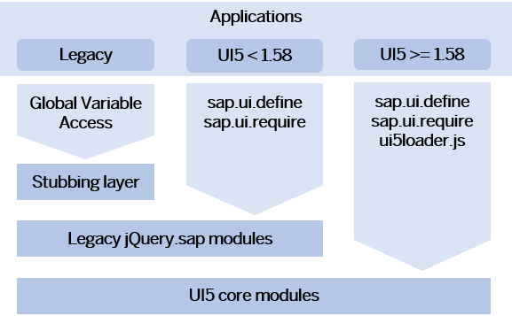

The modules are either Browser-dependent (sap/ui/core) and use the DOM or any
other Browser-native API, or not Browser-dependent (sap/base) and could
run in node.js without DOM access. Note that node.js
is not an officially supported environment.
The modules are introduced with OpenUI5 version 1.58 and replace the existing larger core modules to make the code easier to understand and maintain, and to decrease the initial payload of OpenUI5. To avoid that the removal of dependencies caused by the switch to the new modules causes exceptions, a lazy loading of the legacy modules is provided. For compatibility reasons, this lazy loading is done synchronously and it provides just the API namespace without loading the actual implementation.

As it may
not be obvious where those calls occur or where a dependency is missing, a rule in
the Support Assistant reports the use and provides guidance on how to avoid them. A
second rule with lower priority reports the use of an jQuery.sap
API in general. There are also log warnings in the console of the browser's
development tools, including a stack trace which makes it easy to locate the call in
your coding.
To benefit from the improvements provided by the modules, perform the following steps:
Always declare the full dependencies as described in Loading a Module.
Migrate to the new module API as described in Replacement of Deprecated jQuery APIs. Do not use
the global jQuery.sap API anymore.
Do not use the global sap.ui factory functions. Instead, use their replacements; see Deprecated Factories Replacement.